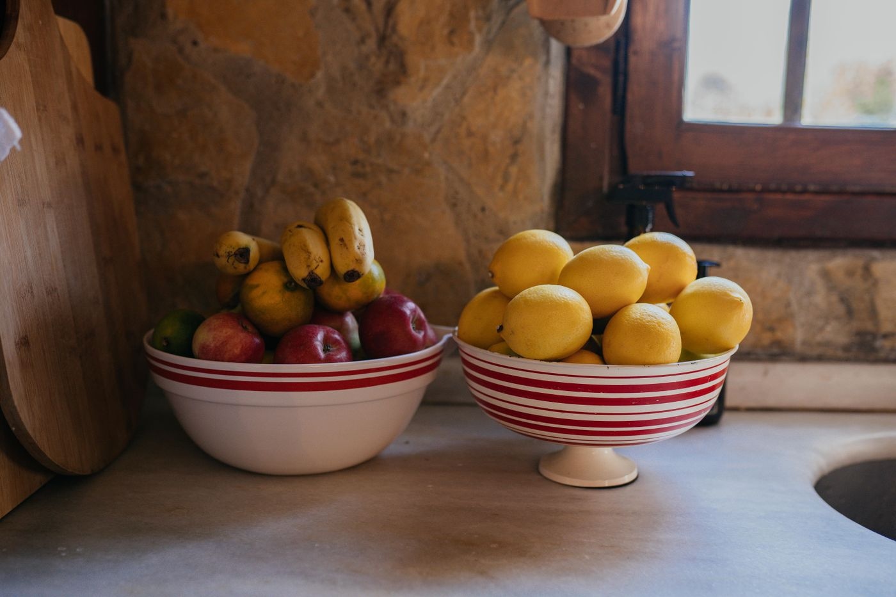
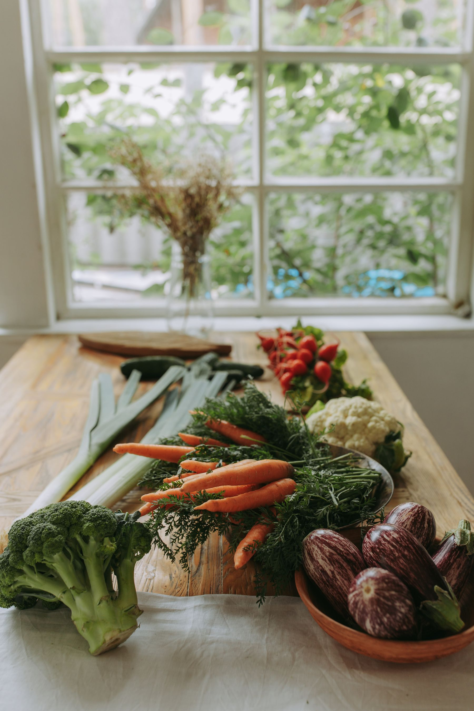

Digestive disorders
IBS, bloating, SIBO, IMO, ISO (H2S). Breath test interpretation, Low FODMAP in three phases, guided reintroduction.
Find out more →Dietitian-nutritionist · Part of the CHIREC medical teams
Bloating, fatigue, an “irritable bowel” no one can explain? I help you understand your digestive discomfort and, where needed, point you towards the right tests — then rebuild, step by step, a way of eating that gives you your energy back.
What I hear every week
If any of this sounds familiar, you are in the right place. Behind these sentences there is usually an explanation — and then a concrete plan, one step at a time.
Where to start
Depending on what brings you here. And if you are not sure, simply book an appointment: we will work it out together.
IBS, bloating, SIBO, IMO, ISO (H2S). Breath test interpretation, Low FODMAP in three phases, guided reintroduction.
Find out more →Endometriosis, PCOS (SMOP), perimenopause and menopause. Care delivered in step with your gynaecologist, within the CHIREC clinics.
Find out more →Tired of eating “under control”? An eight-step method to learn how to eat calmly again.
Find out more →Energy, recovery, body composition: eating in the service of your performance and your wellbeing.
Talk it through →
Why me
I don't work in isolation: I am part of hospital teams and stay in direct contact with your doctor, from the first assessment through to follow-up.
Part of CHIREC — Endometriosis Clinic Delta, Menopause Clinic Delta, City Clinic Louise.
In contact with your doctor — gastroenterologist, gynaecologist, GP. A follow-up letter after every assessment.
Making sense of your breath test — SIBO (hydrogen), IMO (methane), ISO (H2S, hydrogen sulfide): I help you understand your result and what it means for the way you eat.
A whole-person approach — microbiome, gut-brain axis, vagus nerve, sleep, stress. And care in English, French and Italian.
Gut health · Low FODMAP
These three phases apply to the Low FODMAP protocol only, for digestive disorders (SIBO, IMO, irritable bowel). For weight loss, hormonal balance or sport, the approach is different: personalised support, without these phases.
We calm the ground: strict Low FODMAP, microbiome support and, at times, targeted herbal medicine — alongside any treatment prescribed by your doctor. The aim: fewer symptoms.
One food family at a time, we pin down exactly what you tolerate — and in what quantity.
Your own sustainable plate: how to look after your gut microbiome and lower your risk of the diseases of modern life — cardiovascular disease, neurodegenerative disease, diabetes and cancer.

Women's health
I support women through these transitions and conditions, working closely with your gynaecologist — including within the CHIREC Endometriosis and Menopause Clinics.
Discuss it in consultationWeight loss
No restrictive diets here. Depriving yourself breeds frustration, is often followed by regaining the weight, and can feed disordered eating: it does not hold over time.
My approach is different: think it through properly and aim for the long term, so you lose weight for good while feeling at ease in your own skin. You eat everything — no food is forbidden — taking your tastes and your medical history into account.
Talk it through in consultationRelationship with food
You are far more than a number on the scales. Restrictive diets fail in 95% of cases: it is not your willpower that is at fault, it is the restriction itself. There is another way — the eight-step method developed by behavioural dietitian Florian Saffer: a gradual, kind approach to eating calmly again, without losing any rigour.
Explore the method
How it works
Sometimes a single consultation is enough to unlock things. More often, expect three to five appointments: my aim is to make you independent, as effectively and as quickly as possible. Supported at every step, never left on your own.
Initial assessment
History, symptoms, test results. We take stock, in contact with your doctor.
A tailored plan
Need a precise framework — sports nutrition, a weight-loss goal? I build a plan around your tastes and your needs.
Personalisation
A consultancy service: we work on what you actually need — motivational coaching, a shopping list, or any other support.
Link with your doctor
A follow-up letter sent to your doctor after every assessment.
What my patients often notice
Transit that settles into a rhythm
Markedly calmer bloating
Brain fog lifting
Energy coming back
A clear list of the foods you tolerate
A calmer relationship with your plate
Lasting weight loss, when that is the goal
Every journey is individual; these changes are common, but no result can be guaranteed.
In their words
“Completely attuned to how the patient feels, with real clarity in her explanations and a great deal of warmth. The Zoom follow-up appointments are very practical. I recommend her without hesitation!”
“Truly fantastic: competent, professional, responsive and above all very kind. By far the best medical experience I have had in Brussels.”
“I came with intestinal problems after seeing many specialists in vain. She identified the cause and put a complete follow-up in place. A completely different way of looking at food and the microbiome.”
“Very professional, attentive and available. She helped me reintroduce FODMAPs after irritable bowel syndrome. Thanks to her advice, I am eating normally again. Highly recommended!”
“The most exceptional person to turn to for advice that I have ever met. I had no idea dietetics could be this powerful before I met her.”
Reviews originally written in French and translated here.
Where to find me
In person, or by video consultation from anywhere in the world, in English, French or Italian.
Book onlineCHIREC — Delta Hospital
Boulevard du Triomphe 201, 1160 Auderghem · booking through CHIREC
City Clinic Louise
Avenue Louise 235B, 1050 Brussels · booking through CHIREC
Uccle — CEDAD Medical Center
Rue Beeckman 71, 1180 Uccle · booking through Doctor Anytime
Video consultation
EN / FR / IT · from anywhere in the world
For companies
To open your teams' eyes to digestive health and wellbeing — in English, French or Italian.